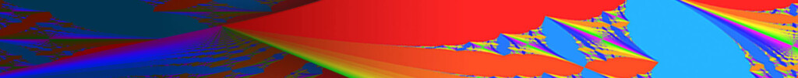

The main goals of this mini-course are to provide a rigorous introduction to the theory of Lyapunov exponents of linear cocycles; to discuss the positivity of the (maximal) Lyapunov exponent of quasi-periodic Schrödinger cocycles via Herman's subharmonicity method; and to describe some ideas for deriving large deviations estimates for quasi-periodic cocycles.

Exercises
First set, on linear cocycles and Lyapunov exponents .pdf.
Second set, on the positivity of the Lyapunov exponent for quasi-periodic Schrödinger operators via subharmonicity .pdf.
Main references
[Bourgain] J. Bourgain, Green's Function Estimates for Lattice Schrödinger Operators and Applications, Princeton University Press (2005).
[DK1] P. Duarte, S. Klein, Lyapunov Exponents of Linear Cocycles: Continuity via Large Deviations, Atlantis Series in Dynamical Systems Vol 3 (2016).
[DK2] P. Duarte, S. Klein, Continuity of the Lyapunov Exponents of Linear Cocycles, Publicações Matemáticas do IMPA (2017). Link to pdf file.
[Viana] M. Viana, Lectures on Lyapunov Exponents, Cambridge University Press (2014).
Additional references
[AJS] A. Avila, S. Jitomirskaya, C. Sadel, Complex One-Frequency Cocycles, Journal of the European Mathematical Society (2014).
[CFKS] H: L. Cycon, R. G. Froese, W. Kirsch, B. Simon: Schrödinger Operators: With Applications to Quantum Mechanics and Global Geometry., Springer (1987).
[Damanik] D. Damanik, Schrödinger Operators with Dynamically Defined Potentials, Ergodic Theory and Dynamical Systems (2014).
[DaFill] D. Damanik, J. Fillman One-Dimensional Ergodic Schrödinger Operators: I. General Theory, AMS (2022).
[DK3] P. Duarte, S. Klein, Positive Lyapunov Exponents for Higher Dimensional Quasiperiodic Cocycles, Communications in Mathematical Physics (2014).
[HaroPuig] A. Haro, J. Puig, A Thouless formula and Aubry duality for long-range Schrödinger skew-products, Nonlinearity (2013).
Topics
- Linear cocycles and extremal Lyapunov exponents
- Definition of linear cocycles [Viana] 2.1
- Extremal Lyapunov exponents [Viana] 3.1, 3.2
- Motivating examples [Viana] 12.1, [HaroPuig] Sec.1, [DK3] Sec.8
- Hyperbolic cocycles (SL2(ℝ)-valued) [Viana] 2.2
- Definition, characterizations
- Simple example + Johnson's theorem [Damanik] 3.2
- Dominated splitting [AJS] Sec.1
- Non uniformrly hyperbolic cocycles (definition)
- Oseledets' multiplicative ergodic theorem (for SL2(ℝ)-valued cocycles) [Viana] 3.4
- Statement of the one-sided version
- Statement of the two-sided version
- Sketch of the proof
- Positivity of the Lyapunov exponent and the spectrum of the Schrödinger operator [CFKS] 9.3, [Damanik] 3.2
- Anderson localization (definition)
- Why positivity of the Lyapunov exponent + Oseledets's theorem do not imply localization?
- Statement of the Ishi-Pastur-Kotani theorem
- Lyapunov exponents of higher dimensional cocycles
- Oseledets' theorem in higher dimensions; non repeated Lyapunov exponents [Viana] 4.1, 4.2, 4.3
- The repeated Lyapunov exponents via Kingman's ergodic theorem [DK1] 1.1.2
- Some linear algebra (singular values, exterior products) [DK1] 2.1.1, 2.1.2, 2.2.1
- Positivity of the Lyapunov exponent for quasi-periodic Schrödinger operators via subharmonicity
- Herman's argument for the almost Mathieu operator [Bourgain] Chap.III
- Subharmonic functions, convexity [DK2] Chap.5
- Sorets-Spencer's theorem [DK2] Chap.5, [DK3]
- Avila's acceleration [AJS]
- Large deviations estimates (LDE) for quasi-periodic cocycles [Bourgain] Chap.IV, V, [DK2] Chap.5
- General definition of LDE, uniform LDE
- Statement of the LDE for quasiperiodic cocycles
- Almost invariance under translation, reduction to a quantitative Birkhoff ergodic theorem
- Complexification of the phase
- Decay of the Fourier coefficients
- First attempt to establish LDE (weak estimate)
- Some arithmetic consideration
- Second attempt to establish LDE (via finer arithmetics)